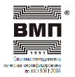

ЭФФЕКТИВНАЯ ЗАЩИТА ОТ КОРРОЗИИ
Заказать материалы, получить полные консультации и расчеты вы можете у специалистов компании АнКорИнжиниринг. Так же вы можете заказать нанесение материалов.
МАТЕРИАЛЫ ЗАЩИТЫ ОТ КОРРОЗИИ
|
АЛЮМОТЕРМ ® композиция термостойкая (ТУ 2312-020-12288779-2001) |
Описание Композиция на основе термостойкого кремнийорганического лака и алюминиевой пудры. Одноупаковочная. Назначение и область применения Антикоррозионная защита стальных изделий и сооружений, длительное время работающих при температурах до 350 °С (кратковременно до 400 °С) в атмосферных условиях всех макроклиматических районов, типов атмосферы и категорий размещения по ГОСТ 15150-69. Применяется в комплексных системах покрытий в качестве защитно-декоративного покрывного слоя по покрытию ЦИНОТЕРМ (ТУ 2312-016-12288779-99) или как самостоятельное покрытие. Сертификация, испытания Свидетельство о государственной регистрации № RU.66.01.40.015.Е.000054.10.10 от 11.10.2010 г., Реестр ОАО "НК "Роснефть". |
|
АЛЮМОТАН ® композиция антикоррозионная (ТУ 2312-018-12288779-99) |
Описание Композиция представляет собой суспензию алюминиевой пудры и функциональных добавок в полиуретановом лаке и смеси органических растворителей. Одноупаковочная, отверждается влагой воздуха. Назначение и область применения Антикоррозионная защита стальных изделий и сооружений, эксплуатируемых в ат- мосферных условиях всех макроклиматических районов, типов атмосферы и категорий размещения по ГОСТ 15150-69. Покрытие стойкое в морской и пресной воде, в водных растворах солей, кислот и щелочей, в нефти и нефтепродуктах. Композиция используется в качестве: покрывного слоя по покрытиям ЦИНОТАН (ТУ 2312-017-12288779-2003), ЦИНЭП (ТУ 2312-022-12288779-2000) и ЦВЭС (ТУ 2312-004-12288779-99) для повышения защит- ных и декоративных свойств; самостоятельного декоративного покрытия для металлических поверхностей, эксплуатируемых в атмосферных условиях. Сертификация, испытания Свидетельство о государственной регистрации № RU.66.01.40.015.E.000011.01.11 от 28.01.2011г. ГОСТ 9.401-91 (изменение № 2). СТО-01393674-007-2011 ОАО «ЦНИИС», РД ГМ-01-02 треста «Гидромонтаж», СТО 03-196-2006 АНК "Башнефть", Технологические указания ОАО «РЖД» (ЦПИ 6/1) по окраске эксплуатируемых железнодорожных мостов. Заключения НИИ ЛКП с ОМЗ «Виктория», ЦНИИС, ВНИИЖТ, ИПТЭР, БашНИПИнефть, ИПЭЭ РАН им. А.Н. Северцова (СИЦ, г. Сочи). |
|
АЛПОЛ ® композиция антикоррозионная (ТУ 2313-014-12288779-99) |
Описание Композиция на основе высокомолекулярного синтетического полимера и алюминиевой пудры. Одноупаковочная. Назначение и область применения Антикоррозионная защита стальных изделий и сооружений, эксплуатируемых в атмосферных условиях всех макроклиматических районов, типов атмосферы и категорий размещения по ГОСТ 15150. Композиция используется по цинкнаполненным покрытиям ЦИНОЛ® и ЦИНОЛ®-СВ (ТУ 2313-012-12288779-99) в качестве защитно-декоративного слоя (нанесение в 1 - 2 слоя). Покрытие АЛПОЛ не устойчиво в бензине и ряде органических растворителей. Сертификация, испытания Свидетельство о гос. регистрации № RU.66.01.40.015.Е.000077.02.12 от 28.02.2012. Рекомендации Госстроя Р 1-2004 (в дополнение к СНиП 2.03.11-85), ГОСТ 9.401-91 (изм. № 2), НИИМосстрой, НИИ дорог и мостов, Польша; аттестация МВК ФСК ЕЭС (ТИ 12288779.25073.00045), Техническое указание № К-05/06 ОАО «РЖД» от 14.07.2006, ТУ 5264-853-01393674-07 «Фундаменты на винтовых сваях для опор контактной сети», Реестр ОАО "НК "Роснефть", РД ГМ-01-02 треста «Гидромонтаж». Заключения ЦНИИПСК им. Мельникова, ЦНИИС, НИИ ЛКП с ОМЗ «Виктория», НИЦИАМТ. |
|
ИЗОЛЭП®- гидро грунт-эмаль (ТУ 2312-108-12288779-2016) |
Описание Двухупаковочный эпоксидный состав, отверждаемый полиаминным отвердителем. Наносится прямо на металл, обеспечивая превосходную антикоррозионную защиту при эксплуатации в реч- ной и морской воде. Покрытие отличается высокой абразивостойкостью, устойчивостью к раство- рам солей, проливам нефти и нефтепродуктов, к другим химическим загрязнениям. Высокий сухой остаток позволяет получать толстослойное покрытие. Отверждается при отрицательных температурах. Назначение и область применения Антикоррозионная защита морских и речных гидротехнических металлических сооружений общего и специального назначения, в том числе портовых сооружений. Применяется в качестве самостоятельного покрытия в зонах полного погружения, а также в комплексной системе с перекрытием акрилуретановой эмалью ПОЛИТОН®-УР(УФ) (ТУ 2312-033-12288779-2002) в зоне переменного уровня и зоне брызг. |
|
ИЗОЛЭП®-mastic грунт-эмаль (ТУ 2312-065-12288779-2007) |
Описание Двухупаковочный состав на основе модифицированной эпоксидной смолы и полиаминного отвердителя. Грунт-эмаль отличается низким содержанием органических растворителей, позволяет получать толстослойное покрытие, выпускается двух цветов: серого и серебристо-серого (с алюминиевой пудрой). Назначение и область применения Антикоррозионная защита металлических конструкций, эксплуатируемых в атмосферных условиях всех макроклиматических районов, типов атмосферы и категорий размещения по ГОСТ 15150. Покрытие устойчиво к проливам нефти, нефтепродуктов и химических реагентов. Грунт-эмаль серебристо-серого цвета может быть рекомендована для антикоррозионной защиты наружной поверхности трубопроводов тепловых сетей под теплоизоляцию при канальном способе прокладки. Используется в качестве: грунтовочного слоя в комплексных системах покрытий с покрывными эмалями ПОЛИТОН®-УР (УФ) (ТУ 2312-033-12288779-2002), ПОЛИТОН®-УР (ТУ 2312-029-12288779-2002), Виникор-62 (ТУ 2312-001-54359536- 2011), а также с другими материалами на эпоксидной, винилово-эпоксидной и полиуретановой основах; самостоятельного покрытия. Грунт-эмаль рекомендуется для окраски новых металлоконструкций, для ремонтной окраски поверхностей с остатками плотно держащихся слоёв ржавчины толщиной не более 50 мкм или старых покрытий ГФ-021, ФЛ-03К, ВЛ-023, а также других покрытий на эпоксидной и полиуретановой основах. Сертификация, испытания Свидетельство о государственной регистрации № RU.66.01.40.015.Е.000019.02.11 от 03.02.2011 г. Сертификаты соответствия № C-RU.ПБ34.В01871 от 24.02.2016г., № C-RU.ПБ34.В.01934 от 21.06.2016. Реестр ОВП ОАО "АК "Транснефть", Реестр ПАО «Газпром», аккредитация АО «ВНИИЖТ», типовой технологический регламент 12288779.02073.00062 по окраске ж/д мостов (ОАО «РЖД»). Заключения НИИ ЛКП с ОМЗ «Виктория», ВНИИГАЗ, ОАО «ЦНИИС», «Академии коммунального хозяйства им. К.Д. Памфилова», «Фундаментпроект». |
|
ИЗОЛЭП®-mio эмаль (ТУ 2312-050-12288779-2005) |
Описание Двухупаковочная эпоксидная эмаль, состоящая из основы, содержащей «железную» слюдку, и отвердителя (алифатической полиаминной смолы). Назначение и область применения Антикоррозионная защита стальных изделий и сооружений, эксплуатируемых в атмосферных условиях всех макроклиматических районов, типов атмосферы и категорий размещения по ГОСТ 15150. Эмаль применяется в комплексных системах покрытий в качестве: чного излучения (не рекомендуется применять в качестве финишного покрытия в условиях открытой атмосферы, категория размещения I по ГОСТ 15150). Покрытие на основе эмали водостойкое, выдерживает проливы нефти и нефтепродуктов, растворов солей, кислот и щелочей. Рекомендуется для применения в системах покрытий с грунтовками ЦИНЭП® (ТУ 2312-022-12288779-2000), ИЗОЛЭП®-primer (ТУ 2312-067-12288779-2008) и ЦВЭС® (ТУ 2312-004-12288779-99), а также с другими эпоксидными или кремнийорганическими грунтовками. В качестве покрывных слоёв рекомендуется применять эмали ПОЛИТОН®-УР (УФ) (ТУ 2312-033-1228879-2002) и ПОЛИТОН®-УР (ТУ 2312-029-12288779-2002), а также другие эмали на полиуретановой и эпоксидной основах. Сертификация, испытания Свидетельство о государственной регистрации № RU.66.01.40.015.Е.000134. 12.10 от 03.12.2010 г. СТО-01393674-007-2011 ОАО «ЦНИИС», СТО 12288779-001-2013 ГК «Автодор»; Заключения НПО «Лакокраспокрытие», Хотьково |
|
ИЗОЛЭП®-oil композиция (ТУ 2312-081-12288779-2011) |
Описание Двухупаковочный эпоксидный состав, состоящий из основы и отвердителя. Основа представляет собой суспензию пигментов, наполнителей и функциональных добавок в растворе модифицированной эпоксидной смолы в смеси органических растворителей. Отвердитель - алифатическая полиаминная смола. Отличается высоким содержанием нелетучих веществ, позволяет получать толстослойное покрытие с высокими защитными свойствами. Светлый цвет покрытия (серый) упрощает процесс инспектирования и приемки покрытия на внутренней поверхности резервуаров. Назначение и область применения Антикоррозионная защита внутренней поверхности стальных резервуаров и других ёмкостей для хранения сырой и товарной нефти, мазута, дизельного топлива; подтоварной, морской и пресной воды. Применяется в качестве самостоятельного покрытия. Сертификация, испытания Свидетельство о государственной регистрации № RU.66.01.40.015.Е.000126.04.11 от 18.04.2011 г. Реестр ОВП ОАО «АК "Транснефть". Заключение ВНИИСТ |
|
ИЗОЛЭП®- primer грунтовка антикоррозионная (ТУ 2312-067-12288779-2008) |
Описание Двухупаковочная эпоксидная грунтовка с высоким сухим остатком, состоящая из основы и полиаминного отвердителя. Содержит антикоррозионные пигменты: фосфат цинка (ингибитор коррозии) и железную слюдку (барьерный эффект). Толстослойное быстросохнущее покрытие, особо рекомендуется для применения в заводских условиях. Назначение и область применения Антикоррозионная защита стальных изделий и сооружений, эксплуатируемых в атмосферных условиях всех макроклиматических районов, типов атмосферы и категорий размещения по ГОСТ 15150. Грунтовка рекомендуется для применения в качестве самостоятельного покрытия или в комплексных системах покрытий с покрывными эмалями производства ЗАО НПХ ВМП: ИЗОЛЭП-mio (ТУ 2312-050-12288779-2005), ПОЛИТОН-УР (УФ) (ТУ 2312-033-12288779-2002), ПОЛИТОН-УР (ТУ 2312-029-12288779-2002) и ВИНИКОР-62 (ТУ 2312-001-54359536-2011); с огнезащитными составами ПЛАМКОР-2 (ТУ 2313-074-12288779-2008), ПЛАМКОР-3 (ТУ 2312-087- 12288779-2012) и ПЛАМКОР-5 (ТУ 2312-104-12288779-2015), а также с другими эпоксидными, винилово-эпоксидными и полиуретановыми эмалями. Сертификация, испытания Свидетельство о государственной регистрации № RU.66.01.40.015.Е.000059.03.11 от 16.03.2011 г. Сертификаты соответствия №№ C-RU.ПБ34.В.01733 от 15.05.2015 г., C-RU.ПБ34.В.01743 от 03.06.2015 г. Стандарт СТО-01393674-007-2011 ОАО «ЦНИИС», стандарт ГК «Автодор» СТО-12288779-001-2013. Заключение аккредитованной лаборатории НИИ ЛКП с ОМЗ «Виктория». |
|
НЕФТЬЭКОР грунт ТУ 2312-006-23394220-2005 ЭПОКСИДНАЯ ГРУНТОВКА |
НАЗНАЧЕНИЕ Грунтовка НЕФТЬЭКОР применяется для защиты от коррозии внутренней поверхности стальных резервуаров, предназначенных для хранения нефти, светлых и темных нефтепродуктов, авиационных и автомобильных топлив, смазочных масел, дизельного топлива, керосина, мазута, пресной, морской и «подтоварной» воды, а также защищает от коррозии трубопроводы и другие металлоконструкции, эксплуатирующиеся в агрессивных условиях. ПРЕИМУЩЕСТВА И ОСОБЕННОСТИ Грунтовка НЕФТЬЭКОР Позволяет получить толстослойное покрытие СФЕРЫ ПРИМЕНЕНИЯ НЕФТЬЭКОР грунт применяется в нефтегазовой отрасли. РЕКОМЕНДАЦИИ К ПРИМЕНЕНИЮ ГРУНТОВКИ НЕФТЬЭКОР Материал одобрен и рекомендован к применению отраслевыми специализированными испытательными центрами и включен в нормативные документы, регламентирующие деятельность различных отраслей промышленности. ГосНИИГА ВНИИСТ АК "Транснефть" |
|
НЕФТЬЭКОР эмаль ТУ 2312-006-23394220-2005 ЭПОКСИДНАЯ ЭМАЛЬ |
НАЗНАЧЕНИЕ
Эмаль НЕФТЬЭКОР применяется для защиты от коррозии внутренней поверхности стальных резервуаров, предназначенных для хранения нефти, светлых и темных нефтепродуктов, авиационных и автомобильных топлив, смазочных масел, дизельного топлива, керосина, мазута, пресной, морской и «подтоварной» воды, а также защищает от коррозии трубопроводы и другие металлоконструкции, эксплуатирующиеся в агрессивных условиях. ПРЕИМУЩЕСТВА И ОСОБЕННОСТИ Эмаль НЕФТЬЭКОР Позволяет получить толстослойное покрытие. СФЕРЫ ПРИМЕНЕНИЯ НЕФТЬЭКОР эмаль применяется для защиты объектов нефтегазового комплекса. РЕКОМЕНДАЦИИ К ПРИМЕНЕНИЮ ЭМАЛИ НЕФТЬЭКОР Материал одобрен и рекомендован к применению отраслевыми специализированными испытательными центрами и включен в нормативные документы, регламентирующие деятельность различных отраслей промышленности. ВНИИСТ ГосНИИГА АК "Транснефть" ОПИСАНИЕ ЭМАЛИ НЕФТЬЭКОР Эпоксидная эмаль НЕФТЬЭКОР соответствует требованиям, предъявляемым к покрытиям для защиты емкостей и резервуаров для хранения нефти и нефтепродуктов. Высокие защитные свойства эмали НЕФТЬЭКОР сочетаются с хорошей технологичностью. Материал тискотропный, позволяет набирать необходимую толщину покрытия за один слой. СОВМЕСТИМОСТЬ ЭМАЛИ НЕФТЬЭКОР С ДРУГИМИ МАТЕРИАЛАМИ ВМП
Эмаль применяется в комплексной системе покрытия с грунтовкой НЕФТЬЭКОР. |
|
Эмаль ПОЛИТОН®-АК (ТУ 2313-028-12288779-2002) |
Описание Акриловая одноупаковочная эмаль. Назначение и область применения Антикоррозионная защита металлических и железобетонных конструкций, эксплуатируемых в атмосферных условиях всех макроклиматических районов, типов атмосферы и категорий размещения по ГОСТ 15150-69. Покрытие не стойко к любым растворителям. Применяется в качестве защитно-декоративного слоя в комплексных системах антикоррозионной защиты с материалами производства ЗАО НПХ ВМП: ЦИНЭП (ТУ 2312-022-12288779-2000); ЦВЭС (ТУ 2312-004-12288779-99); Возможно применение с другими грунтовками (акриловые, хлоркаучуковые, виниловые, алкидные, силикатные и эпоксидные). Сертификация, испытания Свидетельство о государственной регистрации № RU.66.01.40.015.Е.000268.07.11 от 29.07.2011 г. ГОСТ 9.401-91 (изменение № 2). Заключение ЦНИИПСК им. Мельникова, ЦНИИС, ИПЭЭ РАН им. А.Н. Северцова (СИЦ, г. Сочи) |
|
ПОЛИТОН®-УР эмаль (ТУ 2312-029-12288779-2002) |
Назначение и область применения Антикоррозионная защита металлических, бетонных и железобетонных конструкций, эксплуатируемых в атмосферных условиях всех макроклиматических районов, типов атмосферы и категорий размещения по ГОСТ 15150. Покрытие ПОЛИТОН-УР устойчиво в воде, нефти и нефтепродуктах. Применяется в комплексных системах покрытий в качестве: промежуточного слоя; покрывного слоя при отсутствии интенсивного воздействия солнечной радиации (не рекомендуется применять в качестве финишного покрытия в условиях открытой атмосферы, категория размещения I по ГОСТ 15150). Рекомендуется для использования в системах покрытий с цинкнаполненными грунтовками ЦИНОТАН (ТУ 2312-017-12288779), ЦИНЭП (ТУ 2312-022-12288779), ЦВЭС (ТУ 2312-004-12288779), а также с другими грунтовками на полиуретановой, эпоксидной, эпоксиэфирной и кремнийорганической основах. Покрывной слой - эмаль ПОЛИТОН-УР (УФ) (ТУ 2312-033-12288779) и другие эмали на акрилуретановой и акриловой основах. Сертификация, испытания Свидетельство о государственной регистрации № RU.66.01.40.015.E.000145.12.10 от 20.12.2010 г. Сертификат соответствия № C-RU/ПБ34.В.01733 от 15.05.2015 г. Строительство: Рекомендации Госстроя Р 1-2004 (в дополнение к СНиП 2.03.11), ГОСТ 9.401 (изменение № 2), ГОСТ 31384, РД ГМ-01-02 треста «Гидромонтаж». Транспортное строительство: СТО-01393674-007-2011 ОАО «ЦНИИС», СТО 001-2006 Группы компаний «Трансстрой», технологический регламент ТР 12288779.02073.00007 (ЦНИИС); аккредитация ОАО «ВНИИЖТ», типовой техноло- гический регламент 12288779.02073.00058 по окраске ж/д мостов (ОАО «РЖД»). Нефтегазовый комплекс: Реестр ОАО «Газпром», Реестр и «Технологическая инструкция компании П2-05 С-028 Р-002 Т-001» ОАО "НК "Роснефть"; Заключения НИИ ЛКП с ОМЗ «Виктория», ЦНИИПСК им. Мельникова, ЦНИИС, ВНИИСТ, ВНИИГАЗ, НИИЖБ, БашНИПИнефть, НИИЭС («РусГидро»). |
|
ПОЛИТОН®-УР (УФ) эмаль (ТУ 2312-033-12288779-2002) |
Описание Акрилуретановая эмаль, двухупаковочная, состоящая из основы и алифатического отвердителя. Эмаль производится двух марок: - марка А - общего назначения; - марка Б - с биоцидом, обладает грибостойкостью по ГОСТ 9.050. Эмаль производится трёх видов: глянцевая, полуглянцевая и матовая и различных цветов по каталогу RAL. Назначение и область применения Антикоррозионная защита металлических и бетонных конструкций, эксплуатируемых в атмосферных условиях всех макроклиматических районов, типов атмосферы и категорий размещения по ГОСТ 15150. Покрытие обладает высокими декоративными свойствами, стойкое к УФ-излучению. Применяется в качестве финишного защитно-декоративного слоя в комплексных системах по покрытиям ПОЛИТОН-УР (ТУ 2312-029-12288779-2002), ФЕРРОТАН (ТУ 2312-036-12288779-2003), ИЗОЛЭП-mastic (ТУ 2312-065-12288779-2007), ИЗОЛЭП-primer (ТУ 2312-067-12288779-2008), ИЗОЛЭП-mio (ТУ 2312-050-12288779-2005), ВИНИКОР-ЭКОПРАЙМ-01 (ТУ 2312-002-67503963-2011) и по другим покрытиям на эпоксидной и полиуретановой основах. Полуглянцевая эмаль предназначена для защиты металлических и бетонных конструкций, глянцевая - для металлических конструкций; матовая - для бетонных конструкций. Сертификация, испытания Свидетельство о государственной регистрации № RU.66.01.40.015.Е.000146.12.10 от 20.12.2010 г. Сертификат соответствия № C-RU.ПБ34.В.01743. Строительство: Рекомендации Госстроя Р 1-2004 (в дополнение к СНиП 2.03.11-85), ГОСТ 9.401 (изменение № 2), ГОСТ 31384. Транспортное строительство: СТО-01393674-007-2011 и СТО-01393674-008-2011 ОАО «ЦНИИС», стандарт организации СТО-12288779-001-2013, технологический регламент ТР 12288779.02073.00007 (ЦНИИС); аккредитация АО «ВНИИЖТ», типовые технологические регламенты 12288779.02073.00058 и 12288779.02073.00062 по окраске ж/д мостов (ОАО «РЖД»). Нефтегазовый комплекс: Реестр ОВП ОАО "АК "Транснефть", Реестр ПАО «Газпром», Реестр и «Технологическая инструкция компании П2-05 С-028 Р-002 Т-001» ОАО "НК "Роснефть"; Заключения НПО «Лакокраспокрытие» (НИИ ЛКП с ОМЗ «Виктория»), ЦНИИС, ВНИИСТ, ВНИИГАЗ, БашНИПИнефть, НИИЭС («РусГидро»), ИПЭЭ РАН им. А.Н. Северцова (Российско-вьет |
|
ФЕРРОТАН ® композиция антикоррозионная (ТУ 2312-036-12288779-2003) |
Описание Композиция на основе полиуретанового лака, в качестве антикоррозионного пигмента содержит железную слюдку. Одноупаковочная, отверждается влагой воздуха. Назначение и область применения Антикоррозионная защита металлических, бетонных и железобетонных конструкций, эксплуатируемых в атмосферных условиях всех макроклиматических районов, типов атмосферы и категорий размещения по ГОСТ 15150-69. Покрытие устойчиво в морской и пресной воде, в водных растворах кислот, солей и щелочей (рН от 2 до 12), в нефти и нефтепродуктах. Применяется в комплексных системах защиты в качестве: промежуточного или покрывного слоя (при отсутствии или незначительной интенсивности УФ-излучения); самостоятельного покрытия. Рекомендуется для использования в системах покрытий с цинкнаполненными композициями ЦИНОТАН (ТУ 2312-017-12288779-2003), ЦВЭС (ТУ 2312-004-12288779-99) и пенетрирующей грунтовкой ФЕРРОТАН-ПРО (ТУ 2312-042-12288779-2004). Покрывные материалы - АЛЮМОТАН (ТУ 2312-018-12288779-99), ПОЛИТОН-УР (ТУ 2312-029-12288779-2002), ПОЛИТОН-УР(УФ) (ТУ 2312-033-12288779-2002), лак ПУЛАК (ТУ 2311-035-12288779-2002), а также другие полиуретановые и виниловые эмали. Сертификация, испытания Свидетельство о государственной регистрации № RU.66.01.40.015.Е.000072.03.11 от 17.03.2011 г. ГОСТ 9.401-91 (изм. № 2), ГОСТ 31384-2008. Нефтегазовый комплекс: Реестр ТУ и ТТ АК "Транснефть"; Реестр ОАО «Газпром», «Технологическая инструкция компании П2-05 С-028 Р-002 Т-001» НК "Роснефть"; СТО 03-196-2006 АНК "Башнефть". Заключения НИИ ЛКП с ОМЗ «Виктория», ЦНИИС, ВНИИСТ, НИИЖБ, Гипротюмен- нефтегаз, БашНИПИнефть, ВНИИГАЗ, НИИЭС (РусГидро), ИПЭЭ РАН им. А.Н. Северцова (Российско-вьетнамский научно-исследовательский и технологический центр, Нячанг; СИЦ, г. Сочи; КИС, г. Североморск). |
|
ФЕРРОТАН®-ПРО грунтовка пенетрирующая (ТУ 2312-042-12288779-2004) |
Описание Грунтовка представляет собой суспензию неорганических пигментов и наполнителей в смеси летучих органических растворителей и полиуретанового лака. Одноупаковочная, отверждается влагой воздуха. Грунтовка выпускается красно-коричневого цвета и бесцветная. Назначение и область применения Антикоррозионная защита конструкций, эксплуатируемых в атмосферных условиях всех макроклиматических районов, типов атмосферы и категорий размещения по ГОСТ 15150-69: - металлические конструкции - грунтовка красно-коричневого цвета: - железобетонные и бетонные конструкции, в том числе подземные - грунтовка красно-коричневого цвета и бесцветная. При нанесении на металлическую поверхность грунтовка обладает хорошей растекаемостью и смачивающими свойствами; укрепляет слои остаточной ржавчины. Рекомендуется для окраски металлоконструкций с подготовкой поверхности до степени 4 по ГОСТ 9.402-2004 (St 3 - St 2 по ISO 8501-1:2007), т.е. поверхностей со следами прочно сцепленной ржавчины и окалины. При нанесении на бетонные и железобетонные конструкции хорошо впитывается, укрепляет поверхностный слой бетона. Грунтовка используется в комплексных системах покрытий с полиуретановыми лакокрасочными материалами ФЕРРОТАН® (ТУ 2312-036-12288779-2003), ПОЛИТОН-УР® (ТУ 2312-029-12288779-2002), АЛЮМОТАН® (ТУ 2312-018-12288779-99). Сертификация, испытания Свидетельство о государственной регистрации № RU.66.01.40.015.Е.000060.03.11 от 16.03.2011 г. ГОСТ 31384-2008. Заключения ЦНИИС, НИИ ЛКП с ОМЗ «Виктория», НИИЖБ. |
|
ЦИНЭП® грунтовка антикоррозионная цинкнаполненная (ТУ 2312-022-12288779-2000) |
Описание Грунтовка на основе эпоксидной смолы с высокодисперсным порошком цинка и полиамидного отвердителя. Двухупаковочная. Назначение и область применения Антикоррозионная защита металлических конструкций, эксплуатируемых в атмосферных условиях всех макроклиматических районов, типов атмосферы и категорий размещения по ГОСТ 15150. Покрытие устойчиво к проливам морской и пресной воды, водных растворов солей, нефти и нефтепродуктов. Применяется в качестве: грунтовки под покрывные материалы в комплексных системах защиты; самостоятельного покрытия. Рекомендуется для использования в качестве грунтовки: - в комплексных системах антикоррозионной защиты с эмалями ИЗОЛЭП®-mio (ТУ 2312-050-12288779-2005), ПОЛИТОН-УР (ТУ 2312-029-12288779-2002) и ПОЛИТОН-АК (ТУ 2313-028-12288779-2002), с композицией АЛЮМОТАН (ТУ 2312-018-12288779-99) и с другими эмалями на эпоксидной, полиуретановой, хлорвиниловой и сополимеро-винилхлоридной основах; - в комплексных системах защиты от коррозии и огня с огнезащитными составами: ПЛАМКОР-1 (ТУ 2316-082-12288779-2011), ПЛАМКОР-2 (ТУ 2313-074-12288779-2008), ПЛАМКОР-3 (ТУ 2312-087-12288779-2012) и ПЛАМКОР-5 (ТУ 2312-104-12288779-2015) Сертификация, испытания Свидетельство о государственной регистрации № RU.66.01.40.015.Е.000294.08.11 от 18.08.2011 г. ГОСТ 9.401 (изменение № 2). СТО-01393674-007-2011 ОАО «ЦНИИС», РД ГМ-01-02 треста «Гидромонтаж», Техническое указание № К-05/06 ОАО «РЖД» от 14.07.2006, Реестр и «Технологи- ческая инструкция компании П2-05 С-028 Р-002 Т-001» ОАО "НК "Роснефть". Заключения ЦНИИС, НИИ ЛКП с ОМЗ «Виктория», ВНИИЖТ, ИПТЭР, ИПЭЭ РАН им. А.Н. Северцова (Российско-вьетнамский научно-исследовательский и технологи- ческий центр, Нячанг; СИЦ, г. Сочи; КИС, г. Североморск). |
|
ЦИНОТЕРМ® композиция антикоррозионная цинкнаполненная термостойкая (ТУ 2312-016-12288779-99) |
Описание Антикоррозионная композиция на основе кремнийорганического термостойкого лака и высокодисперсного порошка цинка. Одноупаковочная. Композиция представляет собой суспензию высокодисперсного порошка цинка в модифицированной кремнийорганической термостойкой смоле с добавками наполнителей и вспомогательных веществ. Одноупаковочная. Композиция выпускается двух марок - ЦИНОТЕРМ® и ЦИНОТЕРМ®-2. Назначение и область применения Антикоррозионная защита стальных изделий и сооружений, эксплуатируемых при высоких температурах в атмосферных условиях всех макроклиматических районов, типов атмосферы и категорий размещения по ГОСТ 15150-69. Композиция ЦИНОТЕРМ применяется при температуре до плюс 350 °С (кратковременно до плюс 400 °С) в качестве грунтовки в комплексных системах защиты с перекрытием композицией АЛЮМОТЕРМ® (ТУ 2312-020-12288779-2001), эмалью КО-811К или другими термостойкими кремнийорганическими эмалями, а также в качестве самостоятельного антикоррозионного покрытия. Композиция ЦИНОТЕРМ-2 применяется в качестве самостоятельного покрытия при температуре до плюс 400 0С (кратковременно до плюс 450 0С). Сертификация, испытания Свидетельство о государственной регистрации № RU.66.01.40.015.Е.000053.10.10 от 11.10.2010 г, ГОСТ 9.401-91 (изменение № 2). Реестр ОАО "НК "Роснефть", заключение ИПЭЭ РАН им. А.Н. Северцова (Российско-вьетнамский научно-исследовательский и технологический центр, Нячанг; СИЦ, г. Сочи; КИС, г. Североморск). |
|
ЦИНОТАН® композиция антикоррозионная цинкнаполненная (ТУ 2312-017-12288779-2003) |
Описание Композиция на основе полиуретанового лака и высокодисперсного порошка цинка, отверждаемая влагой воздуха. Одноупаковочная. Назначение и область применения Антикоррозионная защита металлических конструкций, эксплуатируемых в атмо- сферных условиях всех макроклиматических районов, типов атмосферы и категорий раз- мещения по ГОСТ 15150, в том числе, в сильнозагрязненной промышленной атмосфере; в морской и пресной воде, в водных растворах солей, в нефти и нефтепродуктах. Применяется в качестве: грунтовки под покрывные материалы в комплексных системах защиты; самостоятельного покрытия. Рекомендуется для использования в качестве грунтовки: - в комплексных системах антикоррозионной защиты с эмалью ПОЛИТОН®-УР (ТУ 2312-029-1288779-2002), композициями ФЕРРОТАН® (2312-036-1288779-2003) и АЛЮМОТАН ® (ТУ 2312-018-12288779-99), с лаком ПУЛАК® (ТУ 2311-035-12288779-2002), а также с другими материалами на полиуретановой, эпоксидной, акриловой и виниловой основах; - в комплексных системах огнезащиты с огнезащитными составами ПЛАМКОР-1 (ТУ 2316-082-12288779-2011), ПЛАМКОР-2 (ТУ 2313-074-12288779-2008) и ПЛАМКОР-3 (ТУ 2312-087-12288779-2012). Сертификация, испытания Свидетельство о государственной регистрации № RU.66.01.40.015.E.000010.01.11 от 28.01.2011 Сертификаты соответствия № C-RU.ПБ34.В.01871 от 24.02.2016, № C-RU.ПБ34.В.01934 от 21.06.2016. Строительство: Рекомендации Госстроя Р 1-2004 (в дополнение к СНиП 2.03.11), ГОСТ 9.401 (изм. № 2), ГОСТ 31384, ТИ 12288779.25173.00020 (ГУП НИИЖБ). Транспортное строительство: СТО-01393674-007-2011 ОАО «ЦНИИС», СТО 01-2006 Группы компаний «Трансстрой», СТО 12288779-001-2013 ГК «Автодор»; технологические регламенты ТР 2288779.02073.00006 и ТР 12288779.02073.00007 (ЦНИИС); аккредитация ОАО «ВНИИЖТ», типовой технологический регламент 12288779.02073.00058 по окраске ж/д мостов (ОАО «РЖД»), технологические указания ОАО «РЖД» по окраске эксплуатируемых железнодорожных мостов. Нефтегазовый комплекс: Реестр ПАО «Газпром», Реестр и «Технологическая инструкция компании П2-05 С-028 Р-002 Т-001» ОАО "НК "Роснефть", СТО 03-196-2006 АНК "Башнефть". Заключения: ЦНИИПСК им. Мельникова, НИИ ЛКП с ОМЗ «Виктория», ЦНИИС, ВНИИЖТ, ВНИИСТ, ИПТЭР, БашНИПИнефть, ВНИИГАЗ, НИИЖБ, НИИЭС (РусГидро), ИПЭЭ РАН им. А.Н. Северцова (Российско-вьетнамский научно-исследовательский и технологический центр, Нячанг; СИЦ, г. Сочи; КИС, г. Североморск). |
|
ЦИНОЛ®-СВ композиция антикоррозионная цинкнаполненная (ТУ 2313-012-12288779-99) |
Описание Композиция представляет собой суспензию высокодисперсного порошка цинка в растворе высокомолекулярного синтетического полимера (массовая доля цинка в сухом покрытии 96 %). Одноупаковочная. Назначение и область применения Антикоррозионная защита стальных изделий и сооружений, эксплуатируемых в атмосферных условиях всех макроклиматических районов, типов атмосферы и категорий размещения по ГОСТ 15150. Композиция ЦИНОЛ-СВ используется в качестве: грунтовки под покрывные материалы в комплексных системах защиты; самостоятельного покрытия для защиты сварных конструкций подвижного состава железнодорожного транспорта, подвергающихся контактной сварке - при сварке по однослойному покрытию толщиной 20-25 мкм качество сварного шва не ухудшается.; для ремонта цинковых металлических покрытий. В качестве покрывных слоёв по покрытию ЦИНОЛ рекомендуются алюминий- наполненная композиция АЛПОЛ® (ТУ 2313-014-12288779-99), винилово-эпоксидные и алкидные эмали; другие эмали - по согласованию с производителем. |
|
ЦИНОЛ® композиция антикоррозионная цинкнаполненная (ТУ 2313-012-12288779-99) |
Описание Композиция представляет собой суспензию высокодисперсного порошка цинка в растворе высокомолекулярного синтетического полимера. Одноупаковочная. Назначение и область применения Антикоррозионная защита стальных изделий и сооружений, эксплуатируемых в атмосферных условиях всех макроклиматических районов, типов атмосферы и категорий размещения по ГОСТ 15150. Покрытие устойчиво в пресной и морской воде, водных рас- творах солей (pH = 6,0-9,0). Покрытие не стойко к бензину и ряду органических растворителей. Композиция ЦИНОЛ используется в качестве: грунтовки под покрывные материалы в комплексных системах защиты; самостоятельного покрытия; ремонтного состава цинковых металлических покрытий. В качестве покрывных слоёв по покрытию ЦИНОЛ рекомендуются алюминий- наполненная композиция АЛПОЛ® (ТУ 2313-014-12288779-99), винилово-эпоксидные и алкидные эмали; другие эмали - по согласованию с производителем. |
|
ЦВЭС-МО грунтовка этилсиликатная цинкнаполненная для межоперационной защиты (ТУ 2312-039-12288779-2004) |
Описание Двухупаковочная этилсиликатная цинкнаполненная межоперационная грунтовка, состоящая из основы - пасты цинкового порошка и связующего. Назначение и область применения Антикоррозионная защита поверхности металлических заготовок, деталей и сборочных единиц на период хранения между операциями изготовления и монтажа в атмосферных условиях макроклиматических районов с умеренным, умеренно-холодным и холодным климатом, всех типов атмосферы и категорий размещения по ГОСТ 15150-69. Применяется также для защиты и герметизации резьбовых соединений труб. Стальные изделия и детали с покрытием ЦВЭС-МО могут быть подвергнуты сварке, резанию. Однослойное покрытие не влияет на качество сварного шва. Грунтовка пригодна для нанесения на автоматизированных окрасочных линиях. Срок службы покрытия при толщине от 15 до 25 мкм составляет до одного года. Грунтовка может перекрываться следующими материалами производства ЗАО НПХ ВМП: - полиуретановые: композиции ЦИНОТАН® (ТУ 2312-017-12288779-2003), АЛЮМОТАН® (ТУ 2312-018-12288779-99), ФЕРРОТАН®ТУ 2312-036-12288779-2003), эмаль ПОЛИТОН®-УР (ТУ 2312-029-12288779-2002); - эпоксидные: грунтовка ЦИНЭП® (ТУ 2312-022-12288779-2000), эмаль ИЗОЛЭП®-mio (ТУ 2312-050-12288779-2005), грунт-эмаль ИЗОЛЭП ®-mastic (ТУ 2312-065-12288779-2007) и другими лакокрасочными материалами (по согласованию с представителями ЗАО НПХ ВМП). |
|
ЦВЭС®-А Композиция защитно-фрикционная (ТУ 2312-092-12288779-2013) |
Описание Двухупаковочный состав, состоящий из основы и этилсиликатного связующего с массовым соотношением 100:13,4 соответственно. Основа - полимерная паста, содержащая дисперсный абразивный материал. Назначение и область применения Композиция ЦВЭС-А предназначена для повышения коэффициента трения при нанесении на контактные поверхности фрикционных соединений стальных конструкций на высокопрочных болтах, предварительно загрунтованные цинкнаполненной композицией ЦВЭС. На период межоперационного хранения конструкций покрытие обеспечивает дополнительную защиту от атмосферного воздействия. Комплексное покрытие ЦВЭС+ЦВЭС-А предназначено для эксплуатации в атмосферных условиях всех макроклиматических районов, типов атмосферы и категорий размещения по ГОСТ 15150-69. |
|
ЦВЭС® композиция антикоррозионная цинкнаполненная (ТУ 2312-004-12288779-99) |
Описание Двухупаковочная композиция на основе цинковой пасты и этилсиликатного связующего с массовым соотношением 100:15 соответственно. Назначение и область применения Антикоррозионная защита стальных изделий и сооружений, эксплуатируемых в атмосферных условиях всех макроклиматических районов, типов атмосферы и категорий размещения по ГОСТ 15150-69. Покрытие устойчиво в морской и пресной воде, водных растворах солей (рН = 6,0-9,0), в нефти и нефтепродуктах и может применяться в системах холодного и горячего хозяйственно- питьевого водоснабжения. Композиция ЦВЭС используется в качестве: грунтовки под покрывные материалы в комплексных системах защиты; самостоятельного покрытия. Рекомендуется для использования в качестве грунтовки: - в комплексных системах антикоррозионной защиты с композициями АЛЮМОТАН® (ТУ 2312-018-12288779-99), ФЕРРОТАН® (ТУ 2312-036-12288779-2003), с эмалью ПОЛИТОН®-УР (ТУ 2312-029-12288779-2002), а также с другими эмалями на полиуретановой, эпоксидной, винилово - эпоксидной, хлорвиниловой и сополимеровинилхлоридной основах. - в комплексных системах огнезащиты с составами ПЛАМКОР-1 (ТУ 2316-082-12288779-2011), ПЛАМКОР-2 (ТУ 2313-074-12288779-2008) и ПЛАМКОР-3 (ТУ 2312-087-12288779-2012). По однослойному покрытию ЦВЭС допускается проведение сварочных работ (без ухудшения качества сварного шва). |
|
СОЛЬВ-ЭП ® растворитель (ТУ 2319-106-12288779-2015) |
Описание Смесь углеводородных и кислородсодержащих летучих органических жидкостей. Назначение и область применения Растворитель СОЛЬВ-ЭП предназначен: для разбавления эпоксидных лакокрасочных материалов производства ЗАО НПХ ВМП; для промывки оборудования; для обезжиривания металлических поверхностей при подготовке к окрашиванию по ГОСТ 9.402. |
|
СОЛЬВ-ЭС растворитель (ТУ 2319-080-12288779-2009) |
Описание Смесь углеводородных и кислородсодержащих летучих органических жидкостей. Назначение и область применения Растворитель СОЛЬВ-ЭС предназначен: для разбавления этилсиликатных лакокрасочных материалов; для промывки оборудования. |
|
СОЛЬВ-УР ® растворитель (ТУ 2319-032-12288779-2002) |
Описание Смесь углеводородных и кислородсодержащих летучих органических жидко- стей. Назначение и область применения Растворитель СОЛЬВ-УР предназначен: для разбавления лакокрасочных материалов производства ЗАО НПХ ВМП; для промывки оборудования; для обезжиривания металлических поверхностей при подготовке к окрашиванию по ГОСТ 9.402. |
|
Ускоритель сушки для полиуретановых лакокрасочных материалов (ТУ 2359-047-12288779-2005) |
Описание Ускоритель сушки представляет собой растворы солей жирных кислот. Назначение и область применения Рекомендуется к применению в условиях низкого влагосодержания воздуха для сокращения времени высыхания одноупаковочных полиуретановых композиций ЦИНОТАН® (ТУ 2312-017-12288779-2003), ФЕРРОТАН® (ТУ 2312-036-12288779-2003), АЛЮМОТАН® (ТУ 2312- 018-12288779-99) и эмали ПОЛИТОН-УР® (ТУ 2312-029-12288779-2002) производства ЗАО НПХ ВМП: |
|
ВИНИКОР грунт-эмаль ТУ 2312-001-54359536-2011 ГРУНТ-ЭМАЛЬ ВИНИЛОВО-ЭПОКСИДНАЯ |
НАЗНАЧЕНИЕ Грунт-эмаль ВИНИКОР предназначена для защиты от коррозии металлических конструкций в атмосферных условиях различных климатических районов и внутри промышленных помещений. ПРЕИМУЩЕСТВА И ОСОБЕННОСТИ ГРУНТ-ЭМАЛЬ ВИНИКОР Толерантность к подготовке поверхности; Всесезонное нанесение (от - 10 оС до + 40 оС). СФЕРЫ ПРИМЕНЕНИЯ Грунт-эмаль ВИНИКОР применяется в промышленном, гражданском, и транспортном строительстве, энергетике, агропромышленном комплексе, воднотранспортной отрасли. РЕКОМЕНДАЦИИ К ПРИМЕНЕНИЮ ГРУНТ-ЭМАЛИ ВИНИКОР Материал одобрен и рекомендован к применению: ИЛ «ЛКП-ХОТЬКОВО-ТЕСТ» ОПИСАНИЕ ГРУНТ-ЭМАЛИ ВИНИКОР Грунт-эмаль ВИНИКОР применяется как самостоятельное покрытие. Она отлично подходит для производства ремонтных работ, т.к. допускает нанесение на поверхность по остаткам плотно сцепленной ржавчины и старых покрытий на основе алкидных, эпоксидных, винилово-эпоксидных эмалей и грунтовок. Грунт-эмаль ВИНИКОР - это экономичный лакокрасочный материал для всесезонного нанесения, образующий защитное покрытие со средним сроком службы. |
|
ВИНИКОР-061 ТУ 2312-001-54359536-2011 ВИНИЛОВО-ЭПОКСИДНАЯ ГРУНТОВКА |
НАЗНАЧЕНИЕ Грунтование металлических конструкций, эксплуатирующихся в атмосфере, внутри промышленных помещений, в морской и пресной воде. Используется в системах покрытий на винилово-эпоксидной основе. ПРЕИМУЩЕСТВА И ОСОБЕННОСТИ Грунтовка ВИНИКОР-061 Всесезонное нанесение (от -10 oC до +40 oC); Толерантность к подготовке поверхности (возможно нанесение по остаткам ржавчины); Повышенные защитные свойства (содержит ингибитор коррозии). СФЕРЫ ПРИМЕНЕНИЯ Грунтовка ВИНИКОР-061 применяется в промышленном и гражданском строительстве, энергетике, металлургии, транспортном машиностроении, судостроении и судоремонте. РЕКОМЕНДАЦИИ К ПРИМЕНЕНИЮ ГРУНТОВКИ ВИНИКОР-061 Материал одобрен и рекомендован к применению: ВНИИСТ ЦИИПСК им. Мельникова НИИ ЛКМ с ОМЗ "Виктория" ВНИПИНефтехим ЦНИИ Морского флота ОПИСАНИЕ ГРУНТОВКИ ВИНИКОР-061 Грунтовка ВИНИКОР-061 обладает прекрасной адгезией к стальным, оцинкованным и алюминиевым поверхностям. Ингибитор коррозии, содержащийся в ее составе, препятствует возникновению ржавчины и обеспечивает надежную защиту металла, а эпоксидная основа - химическую стойкость покрытия.
Грунтовка ВИНИКОР-061 применяется для антикоррозионной обработки новых металлоконструкций и для проведения ремонтных работ. СОВМЕСТИМОСТЬ ГРУНТОВКИ ВИНИКОР-061 С ДРУГИМИ МАТЕРИАЛАМИ ВМП Грунтовка ВИНИКОР-061 применяется в системах покрытий с эмалью ВИНИКОР-62, а также другими эмалями на виниловой, винилово-эпоксидной, эпоксидной и хлоркаучуковой основах. |
|
ВИНИКОР-62 ТУ 2312-001-54359536-2011 ВИНИЛОВО-ЭПОКСИДНАЯ ЭМАЛЬ |
НАЗНАЧЕНИЕ Эмаль ВИНИКОР-62 выпускается двух видов: ВИНИКОР-62 марка А - предназначена для защиты от коррозии металлических, бетонных и железобетонных конструкций в атмосфере, внутри промышленных помещений. ВИНИКОР-62 марка Б - применяется для защиты от коррозии металлоконструкций, эксплуатируемых в морской и пресной воде, а также в атмосферных условиях. ПРЕИМУЩЕСТВА И ОСОБЕННОСТИ Эмаль ВИНИКОР-62 Всесезонное нанесение (от -10 oC (темных тонов) / -5 oC (светлых тонов) до +35 oC); Покрытие Устойчивость в морской и пресной воде (марка Б); Химическая стойкость; СФЕРЫ ПРИМЕНЕНИЯ Эмаль ВИНИКОР-62 марка А применяется в промышленном и гражданском строительстве, энергетике, металлургии, транспортном машиностроении, марка Б - в судостроении и судоремонте. РЕКОМЕНДАЦИИ К ПРИМЕНЕНИЮ ЭМАЛИ ВИНИКОР-62 Материал одобрен и рекомендован к применению отраслевыми специализированными испытательными центрами и включен в нормативные документы, регламентирующие деятельность различных отраслей промышленности. |
|
ВИНИКОР-63 ТУ 2313-007-67503963-2013 ВИНИЛОВЫЙ ЛАК |
НАЗНАЧЕНИЕ Лак ВИНИКОР-63 применяется для обеспыливания или пропитки бетонных поверхностей. Может наноситься по минеральным подложкам. ПРЕИМУЩЕСТВА И ОСОБЕННОСТИ Лак ВИНИКОР-63 Высокая проникающая способность. Покрытие Хорошая адгезия к бетону. СФЕРЫ ПРИМЕНЕНИЯ Лак ВИНИКОР-63 применяются в промышленном и гражданском строительстве, а также в мостостроении. РЕКОМЕНДАЦИИ К ПРИМЕНЕНИЮ ЛАКА ВИНИКОР-63 Материал одобрен и рекомендован к применению отраслевыми специализированными испытательными центрами и включен в нормативные документы, регламентирующие деятельность различных отраслей промышленности.
|
|
ВИНИКОР-МАРИН грунт |
НАЗНАЧЕНИЕ ВИНИКОР-МАРИН грунт предназначен для применения в комплексных системах защиты подводной части и района переменной ватерлинии корпусов судов неограниченного района плавания, а также металлоконструкций гидротехнических сооружений. ПРЕИМУЩЕСТВА И ОСОБЕННОСТИ Грунтовка ВИНИКОР-МАРИН
Позволяет наносить толстослойное покрытие Покрытие Устойчивость в морской и пресной воде; Стойкость к резким перепадам температур. СФЕРЫ ПРИМЕНЕНИЯ ВИНИКОР-МАРИН применяется в воднотранспортной отрасли и судостроении. РЕКОМЕНДАЦИИ К ПРИМЕНЕНИЮ ГРУНТОВКИ ВИНИКОР-МАРИН Материал одобрен и рекомендован к применению: ФГУП «Прометей» |
|
ВИНИКОР-МАРИН эмаль |
НАЗНАЧЕНИЕ Используется для защиты от коррозии района переменной ватерлинии, подводной части корпусов судов неограниченного района плавания, а также гидротехнических сооружений. При нанесении на подводную часть и район переменной ватерлинии может перекрываться противообрастающими эмалями. ПРЕИМУЩЕСТВА И ОСОБЕННОСТИ Эмаль ВИНИКОР-МАРИН Позволяет наносить толстослойное покрытие. Покрытие Устойчивость в морской и пресной воде; Стойкость к резким перепадам температур. СФЕРЫ ПРИМЕНЕНИЯ ВИНИКОР-МАРИН эмаль применяется в воднотранспортной отрасли и судостроении . |
|
ВИНИКОР-НОРД |
НАЗНАЧЕНИЕ Грунт-эмаль ВИНИКОР-НОРД предназначена для антикоррозионной защиты бетонных, железобетонных и металлических конструкций, эксплуатирующихся в атмосферных условиях различных климатических районов, а так же внутри промышленных помещений. ПРЕИМУЩЕСТВА И ОСОБЕННОСТИ Грунт-эмаль ВИНИКОР-НОРД Толерантность к подготовке поверхности; Всесезонное нанесение (от - 25 оС до + 40 оС). Покрытие Устойчивость к воздействию промышленной атмосферы, растворов солей, моющих средств. морской и пресной воды, резких перепадов температур (от - 60 оС до + 60 оС), кратковременному воздействию горячей воды и пара. СФЕРЫ ПРИМЕНЕНИЯ Грунт-эмаль ВИНИКОР-НОРД применяется в промышленном и транспортном строительстве, энергетике. |
|
ВИНИКОР-ЭКОПРАЙМ-01ТУ 2312-002-67503963-2011 ЭПОКСИДНАЯ ГРУНТОВКА
|
НАЗНАЧЕНИЕ Эпоксидная грунтовка ВИНИКОР-ЭКОПРАЙМ-01 предназначена для антикоррозионной защиты новых и ремонтируемых металлоконструкций, в том числе с остатками плотнодержащейся ржавчины с толщиной не более 70 мкм. ПРЕИМУЩЕСТВА И ОСОБЕННОСТИ Толерантность к подготовке поверхности; Всесезонное нанесение (от - 10 оС до + 35 оС). СФЕРЫ ПРИМЕНЕНИЯ Материал одобрен и рекомендован к применению: ИЛ «ЛКП-ХОТЬКОВО-ТЕСТ» НИТИ им. А.П. Александрова Акрон ОПИСАНИЕ ГРУНТ-ЭМАЛИ ВИНИКОР-ЭКОПРАЙМ-01
Эпоксидная грунтовка ВИНИКОР-ЭКОПРАЙМ-01 применяется в комплексных системах покрытий для металлоконструкций, эксплуатирующихся в атмосферных условиях. Она отлично подходит для производства ремонтных работ, т.к. допускает нанесение на поверхность по остаткам плотно сцепленной ржавчины и старых покрытий на основе винилового, винил-эпоксидного и эпоксидного связующих. Может применяться как самостоятельное покрытие внутри помещения. |
НАЛИВНЫЕ ПОЛЫ ГУДЛАЙН®
|
ГУДЛАЙН® PU-01 полиуретановая грунтовка для наливного пола (ТУ 2312-073-12288779-2008) |
Описание Полиуретановая грунтовка, одноупаковочная, отверждается влагой воздуха. Назначение и область применения Применяется для защиты бетона в качестве подготовительного грунтовочного слоя в системах полимерных покрытий полов с полиуретановой композицией ГУДЛАЙН PU-11 (ТУ 2312-072-12288779-2008) или как самостоятельное покрытие для обеспыливания бетонных поверхностей, эксплуатируемых в атмосферных условиях внутри помещений. |
|
ГУДЛАЙН® PU-11 Полиуретановая композиция для наливного пола (ТУ 2312-072-12288779-2008) |
Описание Самовыравнивающаяся двухупаковочная полиуретановая композиция, не содержит растворителей. Для получения толстослойного покрытия рекомендуется использование минерального наполнителя с размером частиц не более одной трети расчётной толщины покрытия и влажностью не более 0,5% (например, прокалённый кварцевый песок фракции от 0,2 до 0,63 мм). Для улучшения декоративных свойств полимерного покрытия возможно применение чипсов (флоков) различной толщины, цвета и размеров. Назначение Для устройства полимерного покрытия пола на бетонные основания производственных, технических и складских помещений, в помещениях гражданского назначения: торговые, выставочные залы, объекты бытового обслуживания, стоянки и паркинги с температурой воздуха от плюс 10 до плюс 40 °С. Допускается эксплуатация при температуре от минус 30 до плюс 10 °С с условием постоянства воздействия (например, морозильная камера). Не допускаются резкие перепады температур. Термостойкость покрытия составляет плюс 50 °С при постоянном воздействии и плюс 80 °С при воздействии в течение нескольких суток. Покрытие способно противостоять механическим воздействиям в виде слабой и умеренной нагрузок согласно СП 29.13330.2011 (пешеходные нагрузки и движение транспортных средств на резиновых шинах), является эффективной защитой пола от преждевременного износа, разрушения и пыления при отсутствии интенсивного УФ-излучения. Под воздействием прямого солнечного света возможно некоторое изменение оттенка цвета покрытия, что не влияет на его эксплуатационные характеристики. |
|
ГУДЛАЙН® PU-15 Полиуретановая эмаль (ТУ 2312-096-12288779-2014) |
Описание Одноупаковочная полиуретановая эмаль, отверждаемая влагой воздуха. Назначение Для устройства бесшовного тонкослойного напольного покрытия на бетонные и минеральные основания в производственных, складских, технических помещениях и паркингах, а также для нанесения линий разметки на полиуретановые наливные полы. Допускается нанесение на вертикальные бетонные и минеральные поверхности. Покрытие является эффективной защитой пола от износа и воздействия агрессивных сред, применяется для повышения эстетики и предотвращения пыления бетонных поверхностей. |
|
ГУДЛАЙН® PU-31 Полиуретановый лак на водной основе для наливного пола (ТУ 2311-094-12288779-2013) |
Описание Полиуретановый лак на водной основе; двухупаковочный, состоит из основы и алифатического отвердителя. Назначение и область применения Применяется в качестве финишного защитно-декоративного слоя в системах наливных полов на полиуретановой и эпоксидной основе (ГУДЛАЙН® PU-11 (ТУ 2312-072-12288779-2008) и ГУДЛАЙН® ЭП-22 (ТУ 2312-103-12288779-2015)). Покрытие устойчиво к воздействию УФ-излучения. |
|
ГУДЛАЙН® PU-01 AS полиуретановая грунтовка для антистатического наливного пола (ТУ 2312-073-12288779-2008) |
Описание Полиуретановая грунтовка с токопроводящим наполнителем, отверждается влагой воздуха. Одноупаковочная. Назначение и область применения Применяется для создания токопроводящего слоя в системах антистатических полимерных покрытий полов ГУДЛАЙН для защиты бетона. |
|
ГУДЛАЙН® PU-11 AS Полиуретановая композиция для антистатического наливного пола (ТУ 2312-072-12288779-2008) |
Описание Самовыравнивающаяся полиуретановая композиция с антистатическими добавками, не содержит растворителей. Двухупаковочная. Назначение Для устройства полимерного напольного покрытия с антистатическими свойствами на бетонных основаниях, где необходима защита электронного оборудования и персонала от статического электричества, а также во взрывопожароопасных помещениях. Оптимальные условия эксплуатации - внутри помещений при температуре окружающего воздуха от плюс 10 до плюс 40 °С, допускается при температуре от минус 30 до плюс 10 °С при условии постоянного воздействия. Не допускаются резкие перепады температур. Термостойкость покрытия составляет плюс 50 °С при постоянном воздействии температуры и плюс 80 °С - при воздействии в течение нескольких суток. Покрытие способно противостоять механическим воздействиям в виде слабой и умеренной нагрузок согласно СП 29.13330.2011 (пешеходные нагрузки и движение транспортных средств на резиновых шинах), является эффективной защитой пола от преждевременного износа, разрушения и пыления при отсутствии интенсивного УФ-излучения. Под воздействием прямого солнечного света возможно некоторое изменение оттенка цвета покрытия, что не влияет на его эксплуатационные характеристики. |
|
ГУДЛАЙН® ЭП-21 ТУ 2257-002-23394220-2004 ЭПОКСИДНАЯ ГРУНТОВКА ДЛЯ НАЛИВНОГО ПОЛА |
Назначение: Защита бетонных полов внутри помещений. Используется в качестве подготовительного грунтовочного слоя в системах эпоксидных наливных полов, а также как самостоятельное покрытие для обеспыливания и укрепления бетона. Технические характеристики: внешний вид и цвет - бесцветная или различных цветов (по согласованию с заказчиком) однородный раствор; теоретический расход - 0,25-0,5 кг/м² (в зависимости от впитывающей способности бетонного основания). Условия нанесения: температура в помещении - от +15 °С до +25 °С; относительная влажность воздуха - не более 90%. |
|
ГУДЛАЙН ЭП-21 FAST ТУ 2312-101-12288779-2015 ЭПОКСИДНАЯ ГРУНТОВКА ДЛЯ НАЛИВНОГО ПОЛА |
Назначение: Для использования в качестве подготовительного грунтовочного слоя по бетонному основанию пола (для «молодого» бетона) или по цементно-песчаной стяжке при устройстве полимерного покрытия пола ГУДЛАЙН ЭП-22, а также в качестве самостоятельного покрытия для обеспыливания, укрепления поверхностного слоя, предохранения от высолов и улучшения декоративных свойств. Допускается применение грунтовки в качестве гидроизоляционного слоя по бетонным основаниям пола с возможным капиллярным подсосом влаги. Подходит для новых и старых оснований. Технические характеристики: Покрытие: внешний вид и цвет - однородное глянцевое с желтоватым оттенком; толщина одного сухого слоя 360 мкм Грунтовка: внешний вид и цвет - однородная жидкость желтого цвета; практический расход на однослойное покрытие - 0,4 кг/м² Условия нанесения: температура в помещении - от +10 °С до +35 °С; относительная влажность воздуха - не более 90% |
|
ГУДЛАЙН® ЭП-21 W ТУ 2312-102-12288779-2015 ЭПОКСИДНАЯ ВОДНАЯ ГРУНТОВКА ПО БЕТОНУ |
Назначение: Для использования в качестве подготовительного грунтовочного слоя по бетонному основанию пола при устройстве полимерного покрытия пола ГУДЛАЙН®ЭП-22 или как самостоятельное покрытие для обеспыливания бетонных поверхностей, эксплуатируемых внутри помещений. Технические характеристики: Покрытие: внешний вид и цвет - однородное глянцевое, бесцветное; Толщина одного сухого слоя 50 мкм Грунтовка: внешний вид и цвет - однородная суспензия белого цвета ; Практический расход на однослойное покрытие (в зависимости от степени пористости основания) - от 0,15 до 0,20 кг/м² Условия нанесения: температура в помещении - от +10 °С до +35 °С; относительная влажность воздуха - не более 70%. |
|
ГУДЛАЙН® ЭП-22 ТУ 2312-103-12288779-2015 САМОВЫРАВНИВАЮЩАЯСЯ ЭПОКСИДНАЯ КОМПОЗИЦИЯ ДЛЯ НАЛИВНОГО ПОЛА |
Назначение: Устройство напольного покрытия на бетонных основаниях внутри помещений. Используется в качестве основного самовыравнивающегося слоя в системах эпоксидных наливных полов. Технические характеристики: внешний вид покрытия - однородное, гладкое, глянцевое; цвет покрытия - светло-серый или в соответствии с картой цветов изготовителя; теоретический расход на однослойное покрытие толщиной 1 мм - 1,5 кг/м² - (реальный расход зависит от степени ровности основания и проектной толщины покрытия); рекомендуемая толщина слоя - 1,5-3 мм. Условия нанесения: Температура в помещении - от +8 °С до +35 °С; относительная влажность воздуха - не более 80%. |
МЕТАЛЛИЧЕСКИЕ ПОРОШКИ
|
ПЦВД-0 порошок цинковый высокодисперсный (ТУ 1721-002-12288779-2006) |
Описание Порошок цинковый высокодисперсный марки ПЦВД-0, получаемый методом испаре- ния-конденсации. Назначение и область применения Порошок применяется: -в металлургии при извлечении золота методом кучного выщелачивания, а также на химических производствах в качестве катализатора и реагента; -для получения антикоррозионных покрытий на металлических изделиях методами термодиффузионного цинкования, газоплазменного и иных видов напыления; -при производстве металлоплакирующих пластичных смазок. |
|
ПМВД порошок медный высокодисперсный (ТУ 1790-040-12288779-2005) |
Описание Порошок медный высокодисперсный марок ПМВД-0, ПМВД-1, получаемый методом испарения-конденсации. Назначение и область применения Порошок применяется: - в порошковой металлургии; - в электронной и электротехнической промышленности (для производства элек- тронных схем, микропроволоки, электродов, электро- и теплопроводящих паст и др.); - в химической промышленности (для выделения серы из попутных газов, производ- стве косметики и др.); - в сельском хозяйстве и животноводстве (как антибактериальный и антигрибковый компонент при обработке семян, как минеральная добавка для кормов и др.); - в полиграфии (трафаретная печать); - в других отраслях. |
|
ПБВД порошок бронзовый высокодисперсный (ТУ 1790-007-12288779-2006) |
Описание Порошок бронзовый высокодисперсный марок ПБВД-1 и ПБВД-С, получаемый мето- дом испарения и конденсации Назначение и область применения Порошок предназначен для производства противоизносных и антифрикционных пре- паратов, суперконцентратов (мастербатчей) для полимеров, притирочных паст. |
|
ТЕДИЦИН ПОРОШКОВАЯ СМЕСЬ для термодиффузионного цинкования ТУ 1721 - 024 - 12288779 - 2006 |
Описание Трехкомпонентная порошковая смесь для термодиффузионного цинкования ТЕДИЦИН: компонент А - инертный тугоплавкий материал (шлифпорошок), компо- нент В - цинковый порошок, компонент С - активирующий состав. Назначение и область применения Порошковая смесь ТЕДИЦИН предназначена для нанесения антикоррозионно- го цинкового покрытия на крепежные и другие изделия из углеродистой и низко- легированной стали, а так же из чугуна методом термодиффузионного цинкова |